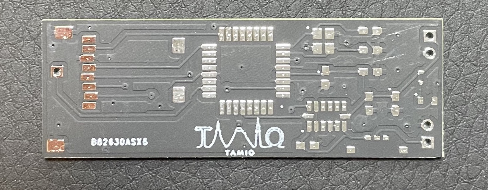
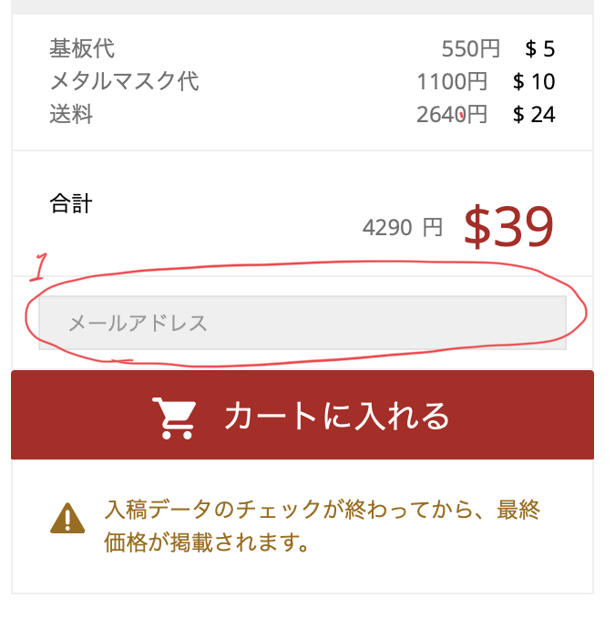
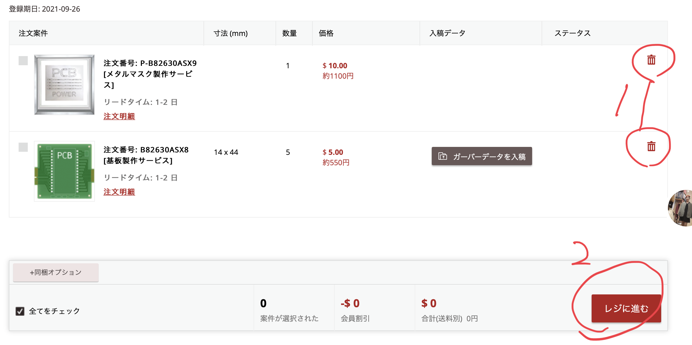

Hello!

・プリント基盤は画像のように部品を実装していく基盤です。
・配線がすでに基盤上で行われているため、ユニバーサル基盤や
ブレッドボードなどよりもコンパクトにできます。
・配線や部品の配置等は自分でデザインし、製造は企業に発注します。
・画像のようなデータを用意します。
※データの作成方法は今後アップします。
・先程のデータを圧縮して一つにします。
・このデータは最後にまた使用します。
発注サイトURL:https://www.pcbgogo.jp/pcb-fabrication-quote.html
・URLをクリックしてサイトに移動。
・PCBgogoさんに製造してもらいます。
・上記の写真のように選択します。
※赤丸1=デザインした基盤と同じサイズを記入
※赤丸2=頼みたい枚数を選択。
・結構高い確率で数枚多く入れてくれます。
・最高で5枚を選択したのに12枚きました。
・上記の写真のように選択します。
※赤丸1&2=好きな色を選択します。私のおすすめはつや消しの黒です。
※赤丸3=表面実装の部品を使う方は、これを'あり'にしておくと後々助かります。
・上記の写真のように選択します。
※赤丸2=なるべく小さいサイズを選択した方が良いと思います。
※赤丸1=枠があると安定しますが、枠はない方がいいと思います。
その理由がこちら
・デカスギ！
①が枠なし、②が枠付きです。
・40cmほどになります。収納に困るのでやめた方が良いです。

・お好みで選択して、最後にカートに入れるを選択してください。
※赤丸1=メールアドレスを記入しないと次に進めません。
※赤丸1&2=作成した圧縮データを入稿して確認を選択。

※赤丸1&2=ここで一度、データに対して企業からチェックが入ります。
・エラーがあったらメールが来るので修正します。
・何もなかったら１０分後くらいにレジに進むを選択できるようになります。
・あとは会計を済ますだけ。
・今回は発注方法に焦点を当てました。
・今後、データをデザインする方法をアップする予定ですが、
早く勉強したいという方は、こちら
の動画で勉強してみてください。
Fin.